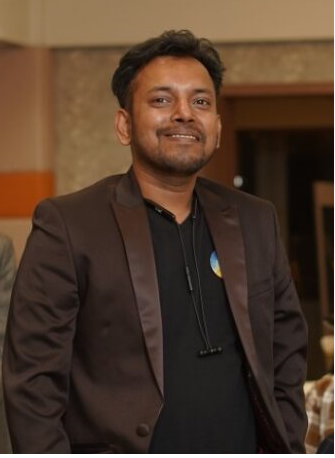

I architect enterprise-grade QA automation and AI-enabled testing platforms — scaling quality across UI, API, Mobile, Data, and Agentic AI layers. Playwright · Tosca · Selenium · AI Testing · Azure DevOps.

Leveraging 10 years of Quality Engineering and Automation Architecture experience, I drove AI-first innovation across Votal AI, EY, NT pre-sales, and enterprise automation initiatives. This work helped establish a stronger AI foundation for DA through smarter test design, faster automation development, intelligent defect analysis, and data-driven quality insights.
Strategic and results-oriented QA Automation Architect with 10 years of experience designing, architecting, and implementing robust test automation frameworks and AI-enabled quality engineering platforms across diverse domains.
My expertise spans Healthcare, IoT, Recruitment, Blockchain, and Enterprise domains. Proficient in driving end-to-end test automation within Azure DevOps CI/CD pipelines, ensuring high-quality software delivery in agile and DevOps ecosystems.
Committed to advancing quality engineering through innovation — from traditional Selenium and Tosca frameworks to modern AI-driven testing using Playwright MCP, Agentic AI, RAG solutions, Azure AI Foundry, OpenAI, Hugging Face, Google Gemini, and AI-powered analytics. Currently open to QA Architect roles, remote consulting, and automation transformation initiatives.
Let's TalkAvailable for QA Architect roles, remote consulting, AI-led automation transformation, automation framework audits, and strategic quality engineering partnerships.
Ready to build the next-gen QA architecture for your product?